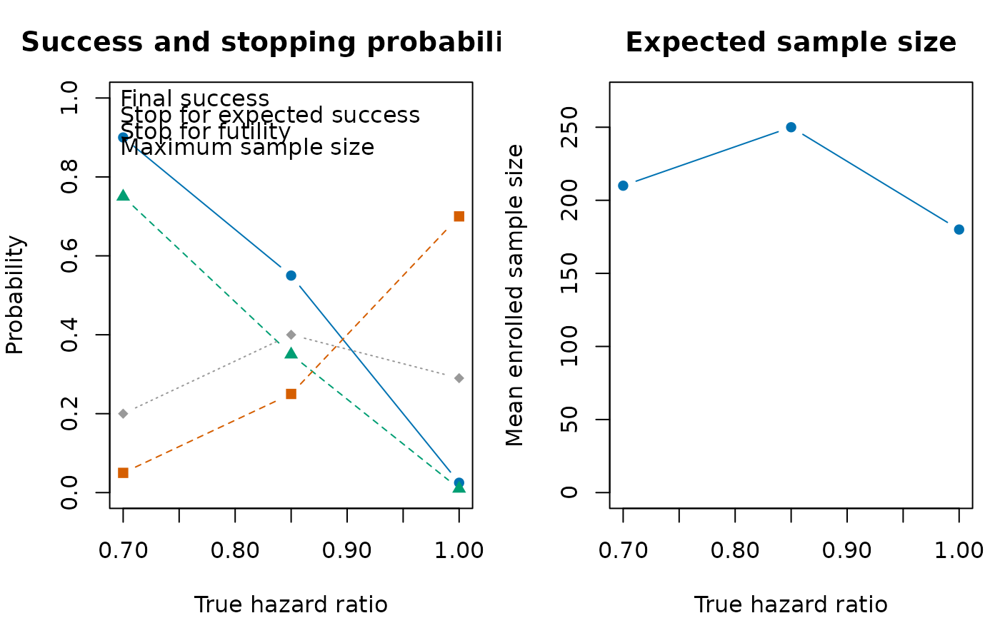

Draws operating-characteristic curves across a series of true treatment-effect scenarios. The first panel shows final success and stopping probabilities. The second panel shows mean enrolled sample size.
Arguments
- x
A data frame returned by
summarise_sims(), with one row per simulation scenario.- effect
Numeric treatment-effect values corresponding to the rows of
x, or a single character string naming a numeric column inx.- xlab
Character label for the treatment-effect axis.
Examples
operating_characteristics <- data.frame(
scenario = c("null", "small", "target"),
effect = c(1, 0.85, 0.7),
power = c(0.025, 0.55, 0.9),
stop_success = c(0.01, 0.35, 0.75),
stop_futility = c(0.7, 0.25, 0.05),
stop_max_N = c(0.29, 0.4, 0.2),
mean_N = c(180, 250, 210),
sd_N = c(45, 60, 55),
stop_and_fail = c(0.001, 0.01, 0.02)
)
plot_sim_ocs(
operating_characteristics,
effect = "effect",
xlab = "True hazard ratio"
)
